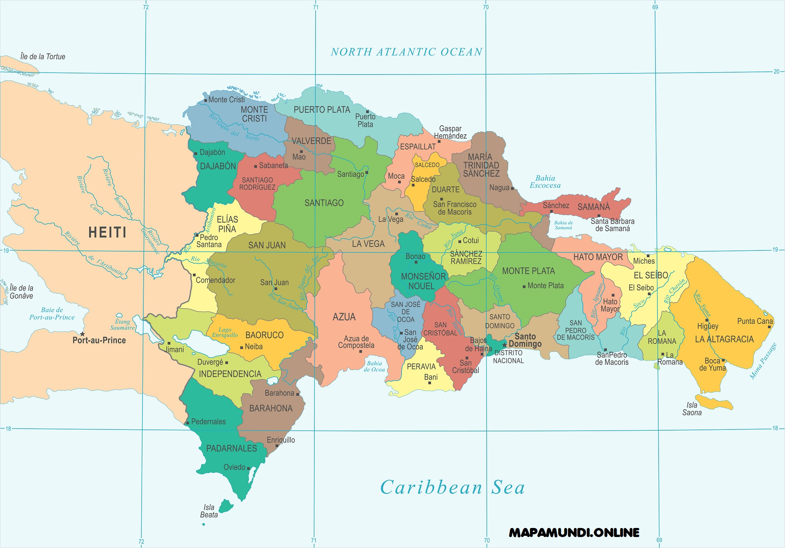

Dominican Republic

- Azua
- Senator: Lía Ynocencia Díaz Santana
- Population: 222, 610

- Bahoruco
- Senator: Melania Salvador Jiménez
- Population: 101, 306

- Barahona
- Senator: José Manuel Castillo Saviñon
- Population: 189, 100

- Dajabón
- Senator: David Rafael Sosa Cerda
- Population: 66, 675

- Duarte
- Senator: Franklin Martín Romero Morillo
- Population: 299, 583

- El Seibo
- Senator: Santiago José Zorilla
- Population: 94, 049

- Elías Piña
- Senator: Arys Yvan Lorenzo Suero
- Population: 63, 303

- Espaillat
- Senator: Carlos Gómez Ureña
- Population: 240, 428

- Hato mayor
- Senator: Cristóbal Venerado Castillo
- Population: 85, 747

- Hermanas Mirabal
- Senator: Bautista Antonio Rojas Gómez
- Population: 92, 045

- Independencia
- Senator: Valentin Medrano Pérez
- Population: 58, 951

- La Altagracia
- Senator: Virgilio Cedano Cedano
- Population: 360, 874

- La Romana
- Senator: Iván José Silva Fernández
- Population: 274, 894

- La vega
- Senator: Ramón Rogelio Genao Durán
- Population: 412, 469

- María Trinidad Sánchez
- Senator: Alexis Victoria Yeb
- Population: 140, 954

- Monseñor Nouel
- Senator: Héctor Elpidio Acosta
- Population: 174, 959

- Monte Cristi
- Senator: Ramón Antonio Pimentel GómezZ
- Population: 117, 736

- Monte Plata
- Senator: Lenin Valdez López
- Population: 191, 447

- Pedernales
- Senator: Dionis Alfonso Sánchez Carrasco
- Population: 35, 280

- Peravia
- Senator: Milciades Marino Franjul Pimentel
- Population: 198, 499

- Puerto Plata
- Senator: Ginette Altagracia Bournigal
- Population: 333, 940

- Samaná
- Senator: Pedro Manuel Catraín Bonilla
- Population: 113, 036

- San Cristóbal
- Senator: Franklin Alberto Rodríguez Garabito
- Population: 643, 595

- San José de Ocoa
- Senator: José Antonio Castillo Casado
- Population: 53, 833

- San Juan
- Senator: Félix Ramón Bautista Rosario
- Population: 220, 264

- San Pedro de Macorís
- Senator: Franklin Ysais Peña Villanova
- Population: 306, 002

- Sánchez Ramírez
- Senator: Ricardo de los Santos
- Population: 151, 888

- Santiago
- Senator: Rafael Eduardo Estrella Valera 1,
- Population: 1, 052, 088

- Santiago Rodríguez
- Senator: Casimiro Antonio Marte Familia
- Population: 57, 209

- Santo Domingo
- Senator: Antonio Manuel Taveras Gúzman
- Population: 2, 995, 399

- Valverde
- Senator: Martin Edilverto Nolasco
- Population:

- Distrito Nacional
- Senator:
- Population: